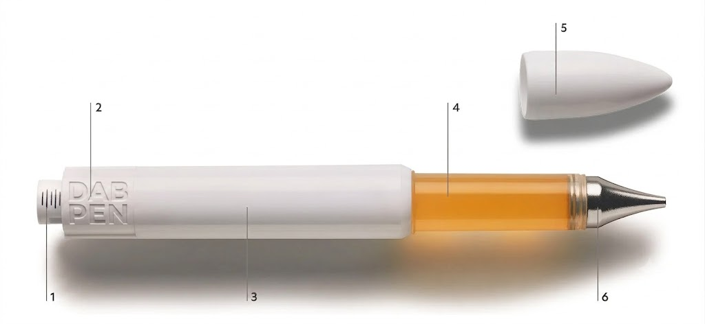
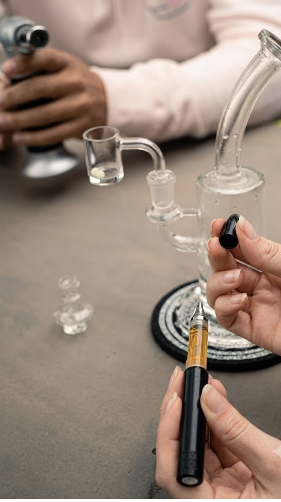
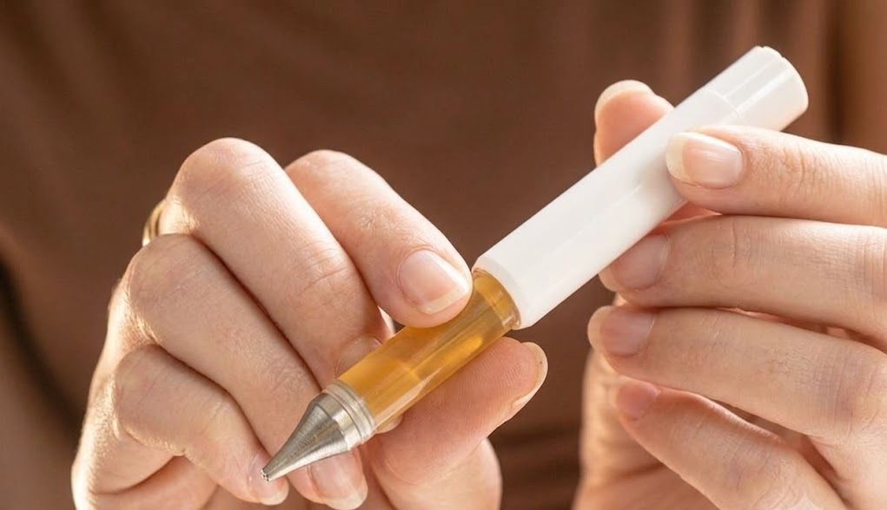
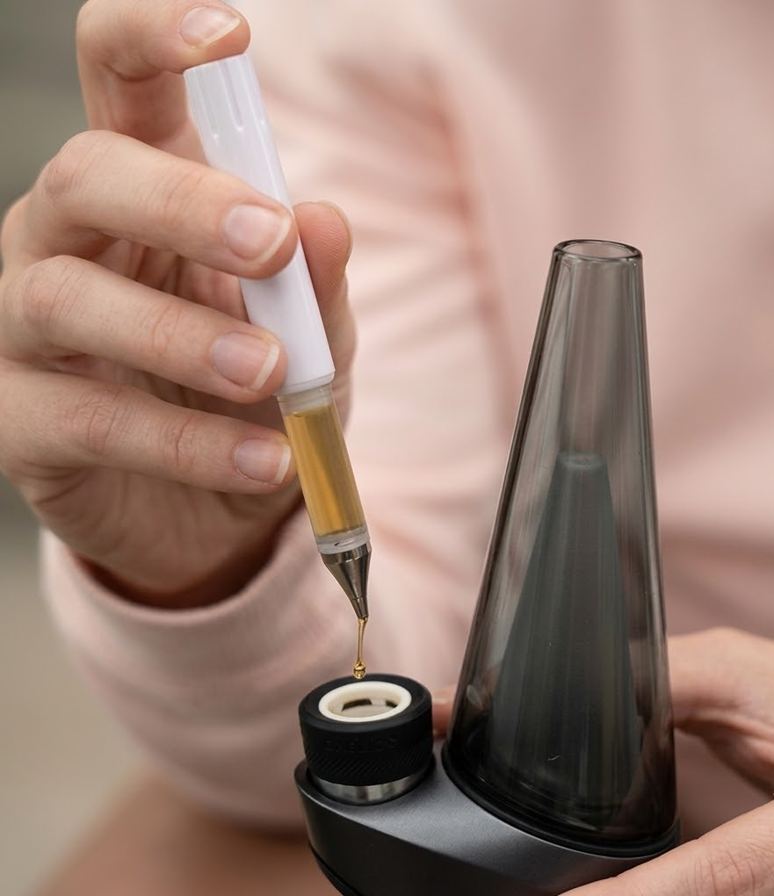
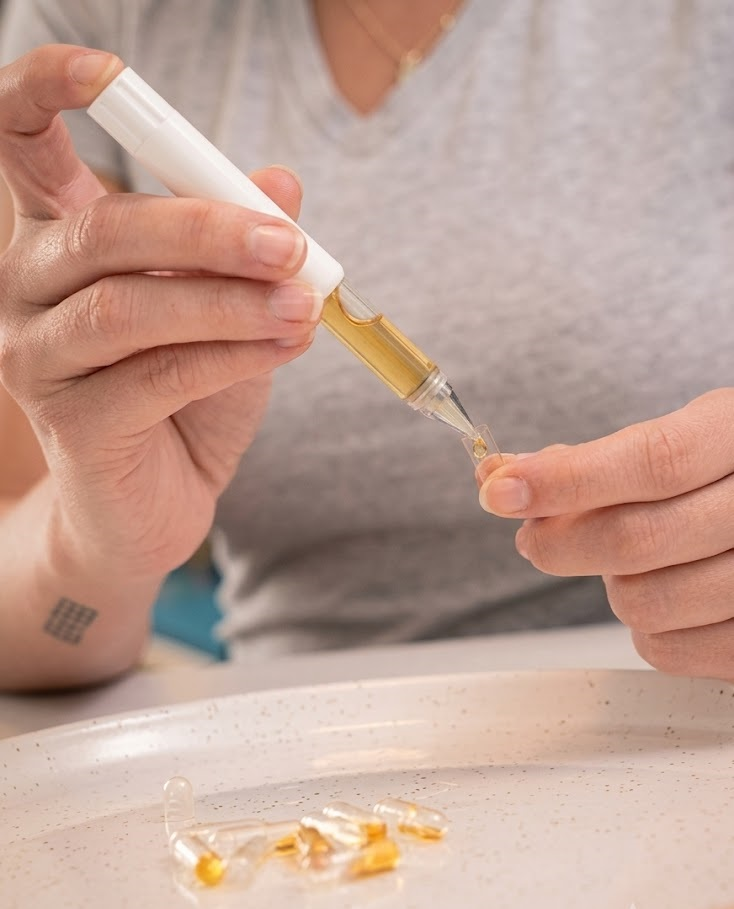
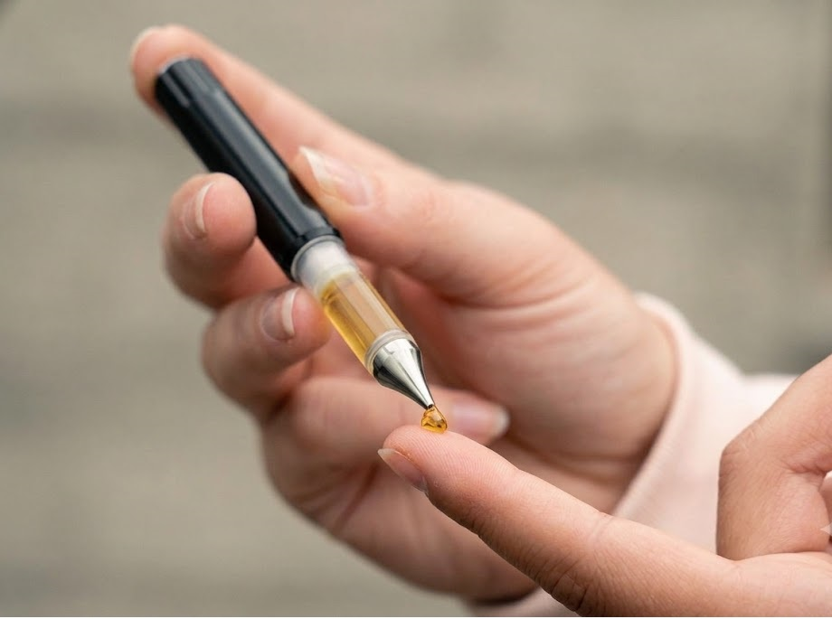
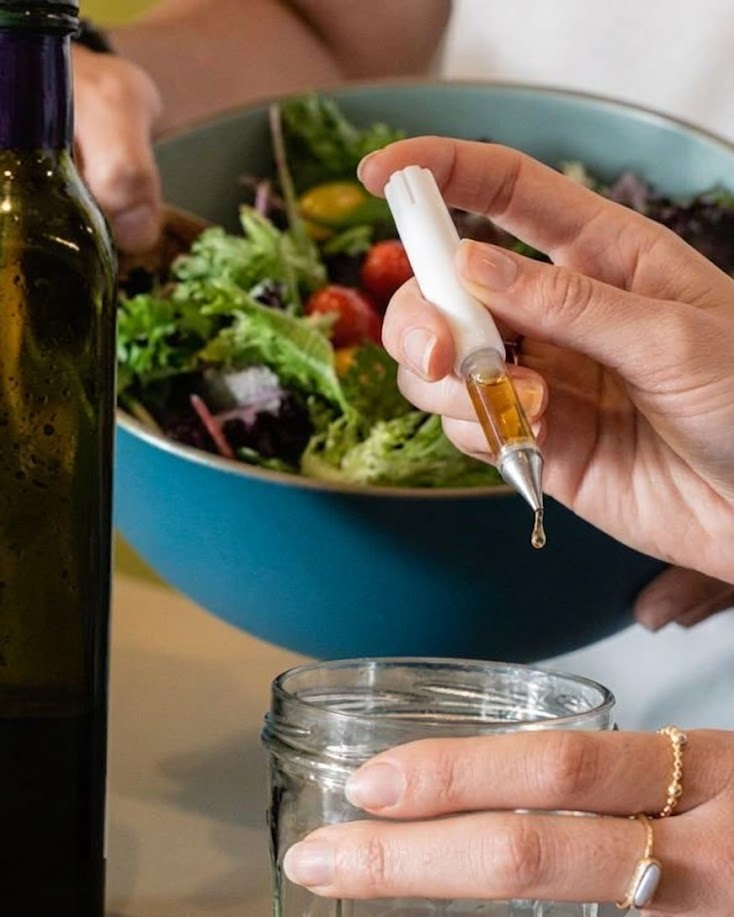
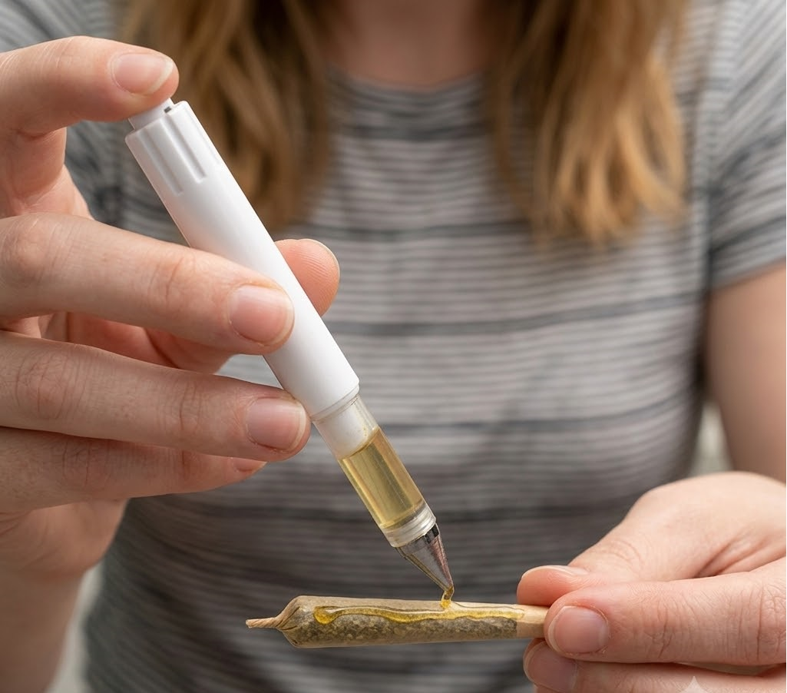

Fuel. Focus.
Peak.
Introduction & User Guide for the Lion's Peak™ Pre-Workout Elixir — clean liquid energy from Lion's Mane, green-tea caffeine, L-citrulline and electrolytes for training, focus and hydration.
A liquid pre-workout elixir · 30 servings · Thai FDA & GMP manufactured in Bangkok
Part 01 · Introduction
Meet the Lion's Peak™
Pre-Workout Elixir
The Lion's Peak™ Pre-Workout Elixir is a ready-to-mix liquid pre-workout supplement from TPO Wellness — built for clean, repeatable fueling whether you are lifting, running, cycling or training for competition. Twist the cap, pour your serving, mix with cold water, and re-seal to lock in freshness.
- Twist open the precision dosing cap on your bottle.
- Pour one measured serving into cold water — the liquid blends instantly.
- Re-seal to preserve the elixir and eliminate any chance of spills.
›Anatomy of the elixir

- Precision twist-cap dosing chamber with clear single-serving lines
- One twist and pour for a repeatable dose — no scoops, no powder mess
- Area available for partner branding
- Amber, BPA-free bottle that shields light-sensitive botanicals and holds 30 servings
- Brandable, leak-proof snap-on overcap that protects the spout and prevents leaks
- No-drip precision pour spout for clean dispensing of the liquid elixir
Part 02 · Fueling
How to Fuel in 2026
Pre-workout timing, dosing and tools
There are several things to consider when building a pre-workout routine. Among other things, you should know how your body responds to caffeine. You should also read the label for properly dosed ingredients and choose a formula made in a certified facility. There are many resources on the web that can guide you through the process.
›What is a pre-workout?
A pre-workout is a supplement taken before training to support energy, focus, blood flow and endurance. A well-made liquid pre-workout such as Lion's Peak™ gets to work quickly, and many athletes find the lift cleaner than other methods of fueling up, such as capsules, sugary energy drinks or your third office coffee.
›How to take your serving
There are several ways to take a pre-workout, but the most common method is a shaker bottle. A shaker looks similar to a water bottle, but it has a few key differences. First, shaker bottles have a mixing ball or grid instead of a plain lid. The elixir is poured into cold water, the lid is sealed, and the bottle is shaken for ten to fifteen seconds. The motion blends the liquid evenly, and you drink it about twenty to thirty minutes before training. Also, look for a bottle with measurement marks so you can match your water to your serving.

›Alternatives to powdered pre-workouts
Several alternatives to powdered pre-workouts are available, the most popular being ready-to-drink cans and pre-portioned sachets. Ready-to-drink formulas skip the mixing step entirely, so you don't have to blend anything yourself. As long as the can is chilled and sealed, it is ready to drink the moment you open it. Many come with extra touches, such as zero-sugar formulations, added electrolytes and recyclable packaging. If you want fuel that travels light, pre-portioned sachets work like single-serve packets. But sachets typically offer fewer ingredient combinations, and you still need water and a bottle to mix them. A liquid elixir ultimately gives you the best of both worlds: pre-blended ingredients that pour instantly, in a bottle that carries all 30 servings to the gym, the track or the trail.

›Ideal timing for your serving
There are many different opinions on the ideal timing for a pre-workout. Ultimately, the ideal window depends on the user and their personal preferences. Generally, taking it closer to your first set brings peak energy mid-session, while taking it earlier spreads the lift across a longer warm-up. There are trade-offs between the two, but many athletes prefer a 20–30 minute head start so the green-tea caffeine and L-citrulline arrive together at the barbell.
Generally, lighter sessions call for a half serving while heavier sessions call for a full serving. If you're not sure what you prefer, as with many things in training, experiment by starting with a half serving and increasing gradually until you find your clean-energy sweet spot.
›Keeping your bottle fresh with a quick rinse
A quick rinse under warm water is some of the best maintenance you can do for your bottle. A fueling best practice is to rinse the cap and spout after every use. This prevents residue from affecting the quality of your next serving. Many people choose liquid formulas for their taste, and rinsing the cap will ensure your next serving is fresh and clean-flavored.
A quick rinse is not a luxury, but it is an essential part of the routine. This habit keeps the pour spout clear, prevents the cap from getting sticky, and ensures you get the best possible taste from every serving. It will also let you toss the bottle into your gym bag without a second thought about lingering smells or spills.
›Half-serving starts preserve smooth energy
When athletes want to keep their energy smooth, a half-serving start is the way to go. This approach delivers the Lion's Mane, green-tea caffeine and L-citrulline without overwhelming your system. Spacing smaller pours across a longer window distributes the lift evenly across the session. The spout should be clean and free from any residue before your next pour.
The benefits of starting low are numerous. First, it preserves steady focus for longer workouts. Moreover, this method doesn't generate a large spike-and-crash swing the way high-stimulant formulas can. It also allows you to enjoy more of the clean, botanical taste of the formula in every sip.
›Choosing your pre-workout
If you're looking to start a pre-workout, one of the first things you'll want to consider is the quality of the formula. It's important to choose a well-made product, so you'll be able to enjoy your training support for many years to come. Look for formulas made in Thai FDA-approved, GMP-certified facilities with transparent, properly dosed ingredients. Ready-to-mix liquids and capsules are also great options. Look for products with clear labeling and third-party testing that are easy to verify. Cheaper formulas cut corners on dosing and will need to be replaced with something better sooner.

Pre-workouts come in a variety of shapes and sizes. The most common formats are tubs of powder and capsules, but these do not provide consistent or easy dosing. With the Lion's Peak™ Pre-Workout Elixir, everyone can fuel cleanly and efficiently at home.
And the Lion's Peak™ Pre-Workout Elixir isn't only for lifting days. Whether you use it for morning focus, afternoon training or competition, the Lion's Peak™ Pre-Workout Elixir ensures a mess-free and precisely dosed experience every time. Consumers and wholesalers can learn more about the Lion's Peak™ Pre-Workout Elixir on our website.
Part 03 · Mixing
Mix & Stack
How to mix and stack the Lion's Peak™ Pre-Workout Elixir into your daily routine
There is lots to know before adding a pre-workout to your routine. For instance, you can learn more about water-soluble botanical extracts and how quickly they absorb. You can also calculate how much green-tea caffeine is in each serving, or check out mix ideas that fit different kinds of training. Plus, learn how the Lion's Peak™ Pre-Workout Elixir makes mixing easy, every time.
›Liquid extracts absorb fast
The botanicals in Lion's Peak™ are water-soluble, which means they dissolve and disperse instantly in water. They are gently extracted from Lion's Mane fruiting bodies and green tea leaves, then standardized at our Thai FDA-approved facility in Bangkok. They are then delivered to the body through a ready-blended liquid carrier. Because the formula is already dissolved, it can be added to water and other beverages without grit or settling.
Lion's Mane is a functional mushroom long valued in traditional wellness practice. Aside from Lion's Mane, the TPO Wellness range draws on other botanicals, including Reishi and Chaga mushrooms and a full cabinet of Thai herbal teas from the TPO Herbal Shop. These ingredients are prepared as standardized extracts, so each serving delivers a consistent amount that dissolves fully in water for fast uptake.
›How green-tea caffeine releases its energy
One of the questions posed by any caffeinated formula is how smoothly the energy arrives. Green tea provides caffeine alongside natural L-theanine, which helps smooth the release of the stimulant. These compounds are absorbed into the bloodstream via the gastrointestinal tract and support alertness and focus. The steadier the release, the longer the clean energy lasts.
Unlike sugary energy drinks that spike and crash, green-tea caffeine is released gradually by the body. Paired with L-citrulline for blood flow and electrolytes for hydration, the elixir supports steady output across a full session. That steady base is what keeps training consistent for weeks or even months on end.

›How to calculate your caffeine per serving
A caffeine calculator is a handy tool when planning your daily intake. It is not a replacement for reading the label, but it will give you an estimate of the total stimulant load of your routine. It takes into account all of your coffees, teas and pre-workout servings across the day.
First, calculate the caffeine per serving. For example, if you are training four times a week, you would multiply the caffeine per serving by your four sessions to see your weekly intake. If your target is 150mg of caffeine per day, then a single serving of the elixir should fit comfortably within it. You would also divide your remaining allowance across your other drinks of the day.
Once you know your numbers, the Lion's Peak™ is the perfect solution for repeatable dosing, as the precision cap delivers one exact single-serving pour every time.

›Mix ideas for training days
If you've ever wanted to upgrade your pre-training drink, you'll be excited to learn that you can create simple, delicious mixes with the Lion's Peak™ Pre-Workout Elixir. The first step is deciding how much cold water you'd like to use. The next step is deciding what to blend it with.
The elixir is a great option, because you can steer the flavor whether you're mixing with cold water, sparkling water or coconut water! With the Lion's Peak™ Pre-Workout Elixir, everyone can make their own clean-energy creations at home. And the Lion's Peak™ Pre-Workout Elixir is great for stacking and sipping too! Whether you use it for lifting, running or competing, the Lion's Peak™ Pre-Workout Elixir ensures a mess-free and precisely dosed experience every time.

Part 04 · Protocol
Training-Day Protocol
Things to consider when building your session-day routine
Modern training culture has expanded the way athletes warm up, fuel and recover. With those changes also come new habits to learn, and we've got another one for your playbook: the training-day protocol is the new backbone of a consistent program. You might not recognize the term, but you probably already follow most of the steps it describes.
›What is a training-day protocol?
A training-day protocol is the routine you follow from first sip to last set — hydration, timing and supplementation working alongside your warm-up. It can be planned the night before, or adjusted session by session as your schedule changes.
Since training days come in a variety of forms, from short gym sessions to long endurance rides, a good protocol lets athletes express their own strategy — while banking some high-quality output, of course. Some of the most disciplined athletes map every serving and sip in a training log. Others take pride in keeping things minimal and intuitive.
›How to run the protocol
A protocol is a flexible framework. The only rule is that the final plan still needs to fit your session. Otherwise, your fueling can take whatever form and use whichever combination of timing and servings you prefer.
However, due to the varying demands of different sports, each kind of session has to be fueled in a specific way, or has to be prepared before you can perform at your best. Keep reading for protocol guidance for specific sessions:

›Protocol for strength days
Strength days call for a full serving about thirty minutes before your first working set. In plain language? That is one capful of Lion's Peak™ in 350mL of cold water while you change and warm up. The green-tea caffeine sharpens focus while the L-citrulline supports the pump for heavy lifts, and you can sip the rest between sets. The upside is that, because the liquid is pre-blended, there is no grit at the bottom of the bottle — every sip is as smooth as the first.
›Protocol for endurance sessions
Endurance sessions are some of the longest fueling challenges in training, with demands similar to back-to-back double workouts. Endurance athletes have to carefully pace caffeine timing and hydration in order to stay strong from the first kilometer to the last. If you take your full serving too late, the energy will arrive after the finish instead of before it. With all this planning needed to place each serving just right across a three-hour ride, endurance fueling is one of the most difficult protocols to master.
›Protocol with the Lion's Peak™ Pre-Workout Elixir
Fueling sessions with tubs of powder and loose scoops can make a training-day routine a messy challenge, but the Lion's Peak™ Pre-Workout Elixir makes fueling all types of sessions easy! There's no prep required before you head to the gym, the track or the trail, and no loose powder that can spill in your bag. With a simple twist, pour and re-seal, you'll be fueled in no time — you can pick up a bottle today at the TPO Herbal Shop in central Bangkok, or contact our wholesale team to stock Lion's Peak™ at your gym or store.
›Before the session: the 30-minute countdown
With the Lion's Peak™ Pre-Workout Elixir, anyone can run a professional pre-training ritual. To set up your session for success, just follow these instructions. Pack your bag and fill your bottle — but wait, don't sip yet!
- Remove the cap from the Lion's Peak™ Pre-Workout Elixir, then pour one serving into your bottle of cold water.
- Shake the bottle for ten seconds until the liquid is fully blended.
- About thirty minutes before your first set, start sipping while you mobilize and warm up — steady sips beat gulping.
- Re-seal the bottle to preserve the elixir and eliminate any chance of spills in your gym bag.
- Log the session in your training journal — the ideal time to note how the energy felt, so your next serving can be tuned even better.
›During the session: intra-workout sipping
Intra-workout fueling is less dramatic than the pre-training ritual, but just as effective (and maybe a little easier) — a great way to make your own steady-output session. To fuel the inside of a long session, just follow these instructions:
- Fill a second bottle with cold water and set it beside your mat or bike.
- Remove the cap from the Lion's Peak™ Pre-Workout Elixir, then pour a half serving into the bottle — or split it into multiple small pours spread across the session.
- Re-seal the cap after each pour to preserve the elixir and eliminate any chance of mess.
- Sip between sets, or every fifteen minutes on longer rides, so your session stays hydrated and fueled from start to finish.
The Lion's Peak™ Pre-Workout Elixir
Clean energy.
Sharp focus.
Every session.
Whether you use it for lifting, running or competing, the Lion's Peak™ Pre-Workout Elixir ensures a mess-free and precisely dosed experience — every time.
Lion's Mane · Green-Tea Caffeine · L-Citrulline · Electrolytes
30 servings per bottle
Precision twist-cap with single-serving pour line
Thai FDA approved & GMP certified facility, Bangkok, Thailand
For education and product guidance only. Dietary supplements are not intended to diagnose, treat, cure or prevent any disease. Consult a physician before use, especially if you are sensitive to caffeine, pregnant or nursing, and keep all supplements out of the reach of children.